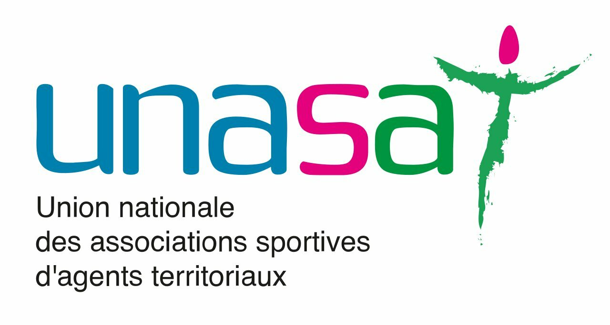

Réseau militant — Ancrage territorial
Un réseau de délégués et de référents régionaux au plus près des territoires.
Afin de faciliter le partage d'informations et de rester en lien avec le terrain, TERRITORIA mutuelle s'appuie sur des référents régionaux chargés de faire vivre le réseau des délégués de leur région.
Animation du réseau des référents
Le réseau militant organise et anime des actions locales : rencontres avec les agents, événements de prévention, promotion de la marque TERRITORIA et de ses services auprès des collectivités de leur territoire.
Retrouvez ci-dessous la carte et les coordonnées de vos référents, que vous pouvez contacter si vous souhaitez nous partager un évènement ou une action au sein de votre collectivité.
Télécharger la carte des référents régionaux (PDF) (nouvelle fenêtre)Retrouvez également dans nos actualités les actions organisées en région via le réseau militant.
Animation du réseau CITer
En collaboration avec 2 partenaires associatifs, TERRITORIA mutuelle a créé la Coordination des initiatives territoriales (CITer). Ses objectifs sont de :
- développer des actions communes en prévention, éducation à la santé, activités sociales… ;
- renforcer la visibilité et l'influence des 3 partenaires ;
- valoriser les initiatives locales.
Retrouvez dans nos actualités les actions organisées par CITer.
Portrait des partenaires
L'UNAAS.CT
L'Union nationale des associations pour l'activité sociale des collectivités territoriales a pour objet de soutenir toutes les actions revendicatives ayant pour but la reconnaissance statutaire des associations d'agents des collectivités territoriales dans la gestion des activités sociales, à l'instar des comités d'entreprise.
Elle fédère et rassemble toutes les associations d'agents des collectivités territoriales afin de préserver la proximité dans la gestion des activités sociales, sportives, culturelles, de loisirs, de vacances et de voyages.
Elle soutient le développement de la protection des agents territoriaux en termes de prestations juridiques, sociales, financières, etc. et propose une veille juridique et financière ainsi que des actions de formation à l'ensemble des associations adhérentes, via le monde de l'économie sociale, solidaire et éco-responsable.

L'UNASAT
L'UNASAT regroupe une vingtaine d'associations sportives territoriales issues de diverses collectivités (villes, communautés d'agglomérations, conseils régionaux et départementaux ou toute autre structure territoriale). Sa vocation est de fédérer les agents territoriaux par la pratique sportive : actifs ou retraités se retrouvent 4 à 5 fois par an lors de compétitions organisées sous forme de critériums nationaux.
À travers les événements proposés, l'association souhaite promouvoir le sport auprès des agents territoriaux et les encourager à pratiquer. Plusieurs disciplines sont proposées : cross-country, courses pédestres sur route (10 km, semi-marathon, marathon, ekiden et trail), mais aussi ski de fond, VTT, cyclisme sur route, pétanque et badminton. Plus d'informations sur unasat.fr (nouvelle fenêtre).